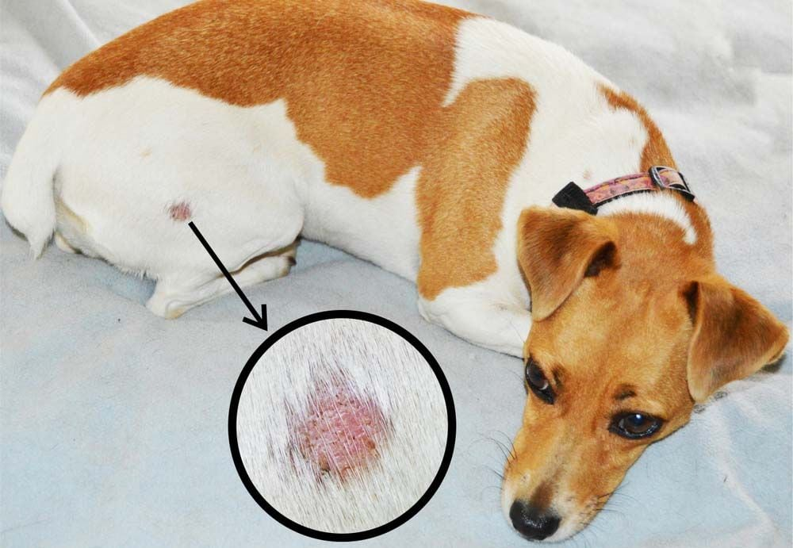

Các bạn nuôi thú cưng chắc cũng không lạ gì bệnh viêm da, đây là căn bệnh khá phổ biến ở chó mèo. Thuốc chữa viêm da cho chó mèo là phương pháp nhiều người nghĩ đến khi thú cưng mắc các bệnh ngoài da. Tuy nhiên, nếu sử dụng một cách bừa bãi, không có hướng dẫn từ bác sĩ thú y, không những tình trạng bệnh không thuyên giảm mà còn gây ảnh hưởng xấu tới vật nuôi. Bài viết dưới đây PetCity sẽ hướng dẫn các bạn chữa viêm da cho chó mèo một cách đơn giản, an toàn.
Nguyên nhân gây ra viêm da ở chó mèo
Bệnh viêm da ở chó là hiện tượng da chó bị nhiễm khuẩn, viêm da và đôi khi có mủ. Nguyên nhân xuất phát từ các vi khuẩn, vi trùng như Sacroptes, Demodex canis, Otodectes cynotis… Chúng nằm ký sinh sâu trong da con vật, hút chất dinh dưỡng gây ngứa ngáy khó chịu. Đôi khi các loại ngoại ký sinh như ve, ghẻ, bọ chét, gầu ký sinh trên lông chó hay dị ứng bụi, lông, thuốc, xà phòng, cũng có thể là nguyên nhân gây ra bệnh viêm da.

Triệu chứng viêm da
Nếu thứ cưng nhà bạn có một vài biểu hiện như trên có nghĩa chúng đã bị viêm da rồi đó.
Cách điểu trị viêm da ở chó mèo
Nếu chưa có sự tham vấn của bác sĩ thú y, các bạn tuyệt đối không tự ý sử dụng các loại thuốc trị viêm da ở chó hay mèo một cách tùy tiện. Sử dụng thuốc không đúng cách không những không làm giảm tình trạng viêm da mà thậm chí còn gây ảnh hưởng không tốt đến thú cưng.
Thay vì sử dụng thuốc trị viêm da, bạn có thể mua thuốc sát trùng tại các nhà thuốc. Tuy nhiên, phương pháp này chỉ áp dụng với các trường hợp bệnh được phát hiện sớm và chưa diễn biến quá nặng.
Cách điều trị viêm da cụ thể, các bạn hãy làm theo các bước dưới đây.
Dùng tông đơ cắt bỏ đám lông ở vùng viêm nhiễm, sau đó cắt mở rộng về 4 hướng , mỗi hướng đều mở rộng khoảng 2,5 cm nữa quanh vùng viêm nhiễm. Việc này nhằm loại bỏ nơi trú ngụ của ký sinh gây bệnh.
Pha ô xi già với nước, rồi nhúng khăn vào hỗn hợp đó, rồi lấy khắn lau sạch phần da nhiễm. Cứ lau 1 đường lại nhúng nước 1 lần. Làm như thế cho đến khi nào chỗ da viêm nhiễm sạch các bụi bẩn và máu khô thì dừng lại.
Bôi thuốc sát trùng vào bề mặt viêm nhiễm nhằm giảm bớt ngứa ngáy trong thời gian điều trị.
Lấy vòng đeo cổ đeo vào cho thú cưng. Làm như vậy dù có ngứa, thú cưng cũng không liếm hay cắn vào khu vực bôi thuốc.